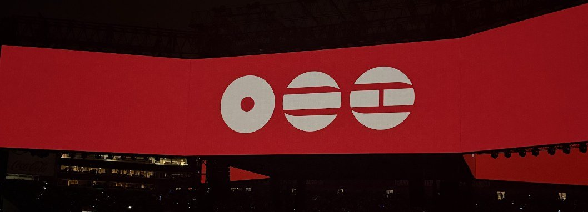

When an artist’s impact extends beyond borders, how do music marketers know which steps to take next? Marketing research plays a significant role in helping companies understand their audience, identify market opportunities, and make more informed strategic decisions. From album releases to world tours, a successful marketing campaign involves more than creative direction; it requires an understanding of the market and audiences beyond the music. Instead of relying on assumptions, marketers can utilize research to better recognize consumer preferences and behavior and study emerging trends.
One Artist, Varied Markets
This is particularly helpful in the music industry as it helps marketing teams allocate resources effectively while developing strategies that align with target audiences. For instance, consider BTS’ highly anticipated return to the industry as a group with their new album and world tour. With a global fanbase featuring different countries and cultures, HYBE and Big Hit Music could leverage marketing research to further understand audience demand and roll out more personalized strategies for a successful comeback.

For example, streaming data, social media engagement, and geographical trends: analyzing these markers could help pinpoint markets with the strongest demand. These insights could also influence decisions regarding touring locations, venue capacities, budgets, and ticket pricing. Beyond identifying these opportunities, marketing research also helps minimize financial uncertainty. Planning and organizing an international tour requires substantial investments as well as fan-focused decision-making backed by legitimate consumer insights rather than consumer guesstimates.
Before they shine the spotlight, they should conduct marketing research!
Ultimately, marketing research doesn’t stifle creativity; it provides direction, extending far beyond just collecting data. Conducting this research is beneficial to businesses and marketing teams as it turns uncertainty into data-driven decisions. Whether for planning a global comeback or launching a new album, understanding the market and its audience is pivotal to successful outcomes.
After all, if music travels across vast land and seas, shouldn’t the marketing strategy be prepared to do the same?